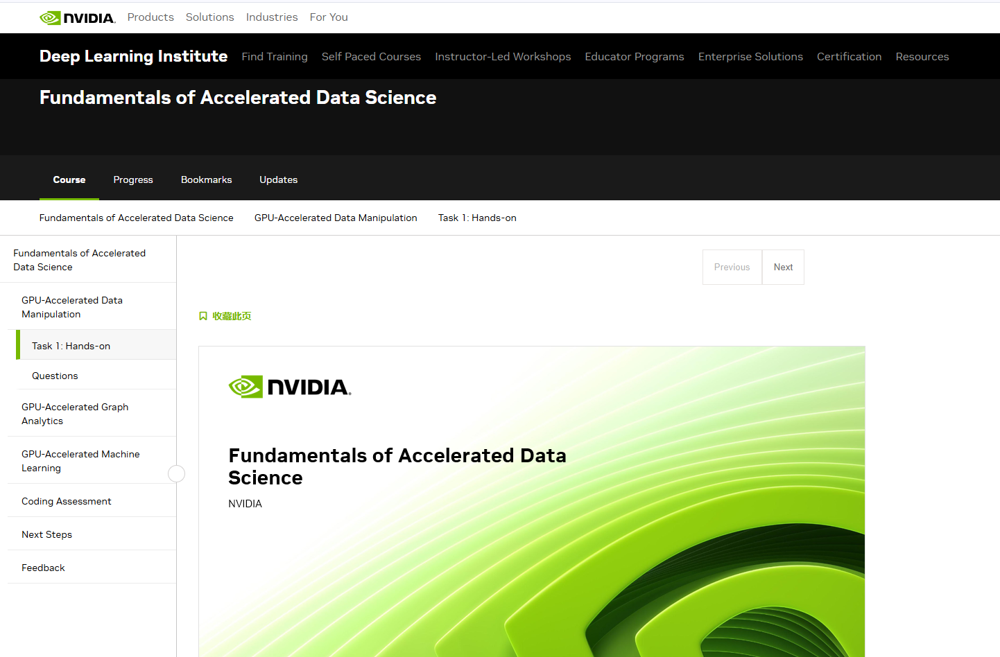
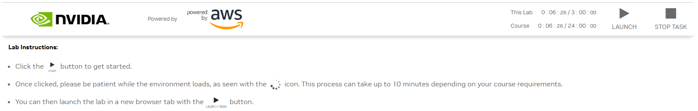
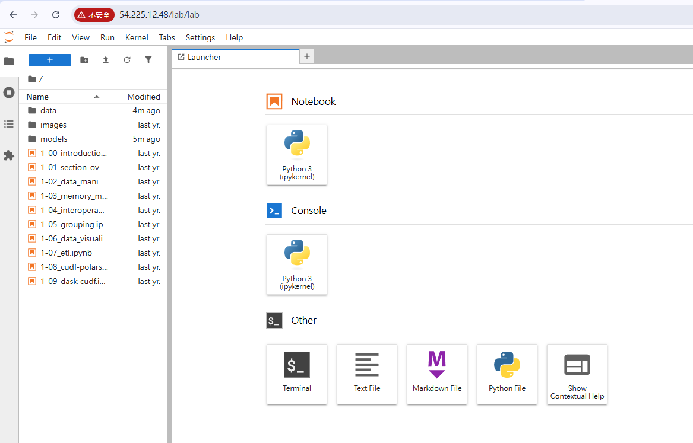
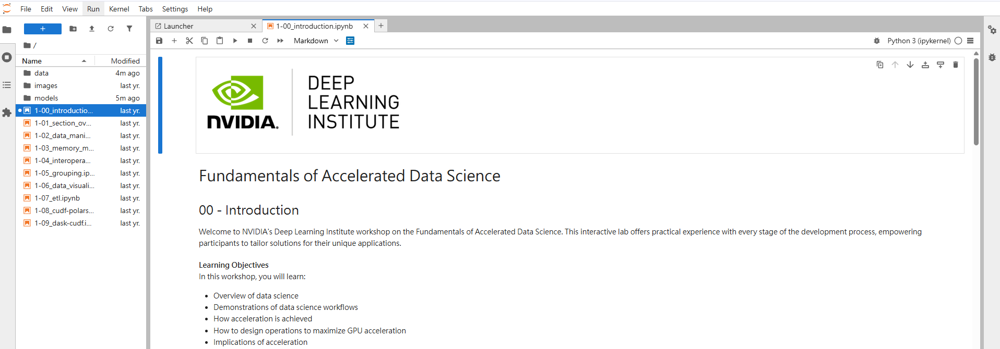
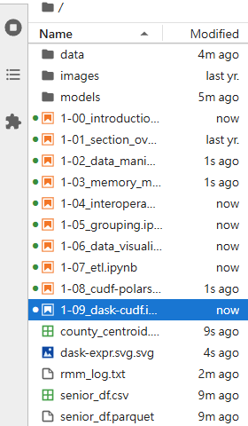

加速資料科學基礎
學員支援指南
請在課程開始前或進行期間，依下列步驟設定並啟動實作環境。
實作環境設定步驟
-
登入 NVIDIA
登入或建立您的 NVIDIA 帳號。
-

加入 DLI 活動後顯示的課程頁面。 -
找到實作控制面板
進入課程頁面後，向下捲動至投影片下方，找到 Lab Instructions 面板。
-
初始化環境
點選 START，開始初始化互動式環境。
-
等候 LAUNCH 啟用
初始化完成後，LAUNCH 按鈕會變成可使用狀態。

Lab Instructions 面板用來控制實作環境。 -
啟動 JupyterLab
點選 LAUNCH，稍候片刻。互動式 JupyterLab 環境會自動在新的瀏覽器分頁開啟。

JupyterLab 開啟後，左側會顯示檔案瀏覽器。 -
開啟第一份 Notebook
在左側邊欄的 File Browser（檔案瀏覽器）中，按兩下
1-00_introduction.ipynb。接著依每份 Notebook 內的說明完成課程練習。
在 JupyterLab 中開啟課程的第一份 Notebook。 -
留意新增的輸出檔案
在課程中執行程式碼時，左側檔案瀏覽器會陸續出現
.csv、.parquet、.svg等輸出檔案，這是正常現象。
產生的檔案會與課程 Notebook 一起顯示。
技術支援
若實作環境發生技術問題，請參考 NVIDIA DLI Platform 疑難排解頁面。